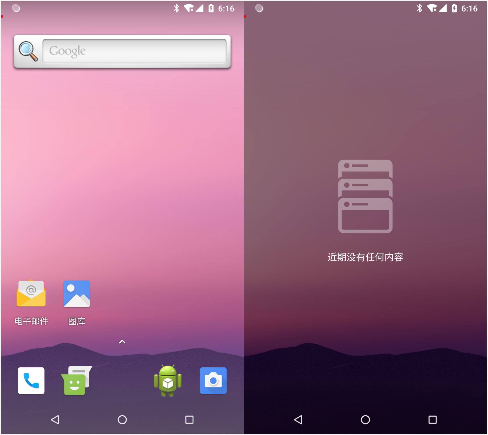

对于Android进程保活问题，网上已经有很多答案了。比如：
方案有很多种，但每一种方案的有其适用范围，且随着Android版本的更新和厂商对ROM的深度定制，所以昨天的方法，今天不一定适用。有没有完全之策呢？可以肯定的说没有。虽然没有百分之百可靠的方法，但这不该成为你去探索答案的阻碍。
What
进程保活，顾名思义，就是：
- 尽量让进程不被系统或用户杀死；
- 即使进程死掉了，也能在某个时候正确的复活。
Why
为什么要进程保活呢？因为：
- 需要常驻后台，处理消息，如即时通讯应用；
- 实时收集用户的信息或者监控用户的操作，流氓软件；
- 非正常死亡，正在处理的任务被中断，希望起来继续任务，如语音视频通话进程；
- 还有很多理由。
How
在进行进程保活之前，首先要明确自己的应用是否一定要一直运行？比如某些应用为了进入首页的时间更短，让自己的应用常驻，这样后面每次进入首页时用户感知的延迟会更短。因为Application除了在第一次进入时才需要创建外，后面都不需要创建。这种情况下，应该更加注重应用的启动优化，而不是走旁门左道。
在明确需要进程保活后，在Android上可以从几方面入手：
- 避免被系统杀死
- 避免被用户杀死
- 避免被其他应用杀死
- 死后自启
- 死后被系统唤起
- 死后被其他应用唤起
下面举一个简单的例子，通过一像素的悬浮窗来提高进程的优先级，可以尽量避免在低内存情况下被系统优先杀掉，同时也可以避免用户通过最近应用列表杀死进程，且在某些情况下还可以自启。
举个例子
一像素悬浮窗，就是通过启动OnePixelWindowService，然后使用WindowManager的addView方法添加一个大小为1x1的透明View；并在Service的onStartCommand方法中返回START_STICKY。接下来看看具体的代码。
权限申请
添加悬浮窗需要在AndroidManifest.xml文件中申明相关的权限：1
2<uses-permission android:name="android.permission.SYSTEM_ALERT_WINDOW" />
<uses-permission android:name="android.permission.SYSTEM_OVERLAY_WINDOW" />
由于Android在6.0后需要动态申请权限，所以还要在添加悬浮窗前确保权限已经获得。下面是假设在Activity中启动OnePixelWindowService的代码：1
2
3
4
5
6
7
8
9
10
11
12
13
14
15
16
17
18
19
20
21
22
23
24
25
26
27
28
29
30
31
32
33
34
35
36
37
38
39public class MainActivity extends AppCompatActivity {
private static final int REQUEST_CODE_FOR_OVERLAY_PERMISSION = 0x201;
@Override
protected void onCreate(Bundle savedInstanceState) {
super.onCreate(savedInstanceState);
setContentView(R.layout.activity_main);
if (Build.VERSION.SDK_INT >= Build.VERSION_CODES.M) {
if (Settings.canDrawOverlays(MainActivity.this)) {
startOnePixelWindowService();
finish();
} else {
Intent intent = new Intent(Settings.ACTION_MANAGE_OVERLAY_PERMISSION,
Uri.parse("package:" + getPackageName()));
startActivityForResult(intent, REQUEST_CODE_FOR_OVERLAY_PERMISSION);
}
} else {
startOnePixelWindowService();
finish();
}
}
private void startOnePixelWindowService() {
Intent intent = new Intent(MainActivity.this, OnePixelWindowService.class);
startService(intent);
}
@Override
protected void onActivityResult(int requestCode, int resultCode, @Nullable Intent data) {
super.onActivityResult(requestCode, resultCode, data);
if (requestCode == REQUEST_CODE_FOR_OVERLAY_PERMISSION
&& Build.VERSION.SDK_INT >= Build.VERSION_CODES.M
&& Settings.canDrawOverlays(MainActivity.this)) {
startOnePixelWindowService();
}
finish();
}
}
添加悬浮窗
在Service中添加悬浮窗需要在onCreate方法中进行，因为在多次调用startService的情况下，onCreate只会调用一次。1
2
3
4
5
6
7
8
9
10
11
12
13
14
15
16
17
18
19
20
21
22
23
24
25
26
27
28
29
30
31
32private WindowManager mWindowManager;
private View mOnePixelView;
@Override
public void onCreate() {
super.onCreate();
addOnePixelView();
}
private void addOnePixelView() {
mWindowManager = (WindowManager) getSystemService(Context.WINDOW_SERVICE);
WindowManager.LayoutParams params = new WindowManager.LayoutParams();
if (Build.VERSION.SDK_INT >= Build.VERSION_CODES.O) {
params.type = WindowManager.LayoutParams.TYPE_APPLICATION_OVERLAY;
} else {
params.type = WindowManager.LayoutParams.TYPE_SYSTEM_ALERT;
}
params.format = PixelFormat.RGBA_8888;
params.flags = WindowManager.LayoutParams.FLAG_NOT_FOCUSABLE
| WindowManager.LayoutParams.FLAG_NOT_TOUCH_MODAL
| WindowManager.LayoutParams.FLAG_NOT_TOUCHABLE;
params.gravity = Gravity.START | Gravity.TOP;
params.x = 0;
params.y = 0;
params.width = WINDOW_SIZE;
params.height = WINDOW_SIZE;
mOnePixelView = new View(this);
mOnePixelView.setBackgroundColor(WINDOW_COLOR);
mWindowManager.addView(mOnePixelView, params);
}
如果是添加1x1的透明窗口，很难确定是否添加成功，因此在Debug阶段，窗口大小改为10x10，且背景色为红色：1
2private static final int WINDOW_SIZE = BuildConfig.DEBUG ? 10 : 1;
private static final int WINDOW_COLOR = BuildConfig.DEBUG ? Color.RED : Color.TRANSPARENT;
同时还要确保在onDestroy方法中移除添加的View：1
2
3
4
5
6
7
8
9
10
11
12@Override
public void onDestroy() {
super.onDestroy();
removeOnPixelView();
}
private void removeOnPixelView() {
if (mOnePixelView != null && mWindowManager != null) {
mWindowManager.removeViewImmediate(mOnePixelView);
mOnePixelView = null;
}
}
最后还要在onStartCommand方法中返回START_STICKY：1
2
3
4@Override
public int onStartCommand(Intent intent, int flags, int startId) {
return START_STICKY;
}
至此可以运行应用了，验证结果怎么样。
运行
在我的LG Nexus 5X(8.1.0)上运行应用，可以顺利看到屏幕左上角有一个红色小方块，清除最近任务后红色小方块也不会消失。

接下来查看当前应用的oom_adj的值：1
2
3
4~ adb shell ps | grep android_keepalive
u0_a106 26707 3176 4320772 60756 SyS_epoll_wait 7478cc43f8 S com.ihuntto.android_keepalive
~ adb shell cat /proc/26707/oom_adj
4
可以看到oom_adj值为4，4代表的是后台重量级进程，比起可见进程的oom_adj的0还是低了一点，难怪使用的都是添加1像素的Activity。同时发现当手机息屏后，过一段时间，进程还是会被系统给杀掉。
总结
虽然有众多的Android进程保活方法，我还要自己去尝试1个像素的透明悬浮窗，主要是为了验证自己的想法的可行性，同时也是自己在Android进程保活路上的第一个脚印。
参考文章
[1] 【腾讯Bugly干货分享】Android 进程保活招式大全
[2] Android保活/拉活（一）教程检索
[3] Android进程保活